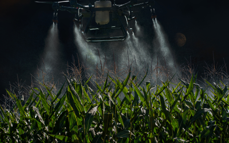

22/04/2019 09:00
Опрыскивание растений с беспилотников
Опрыскивание с дронов может проводиться как минимум в двух форматах: “классическом авиационном”, когда химикаты распыляются по всему полю, и “точечном”, совмещенным, например, с предварительным осмотром посевов при помощи мультиспектральных камер.
Читать полностью